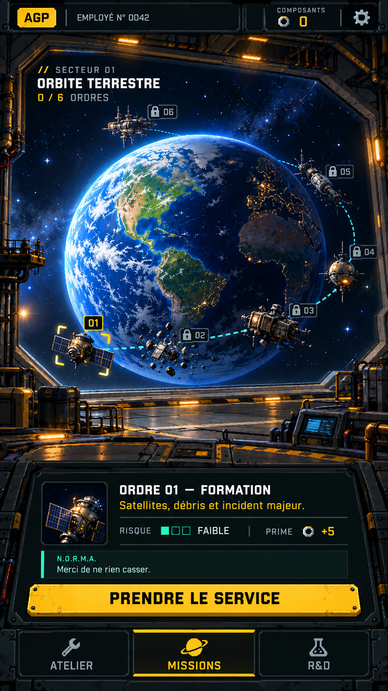
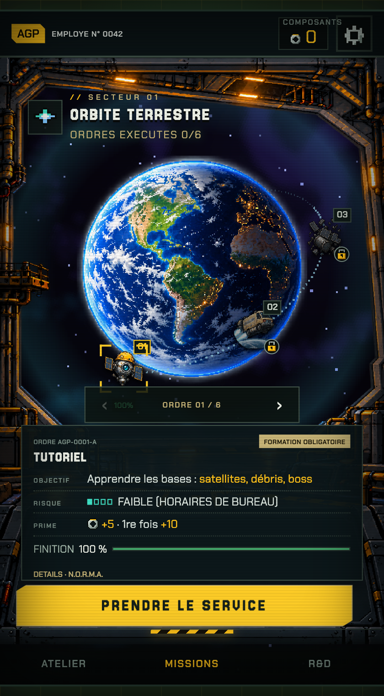
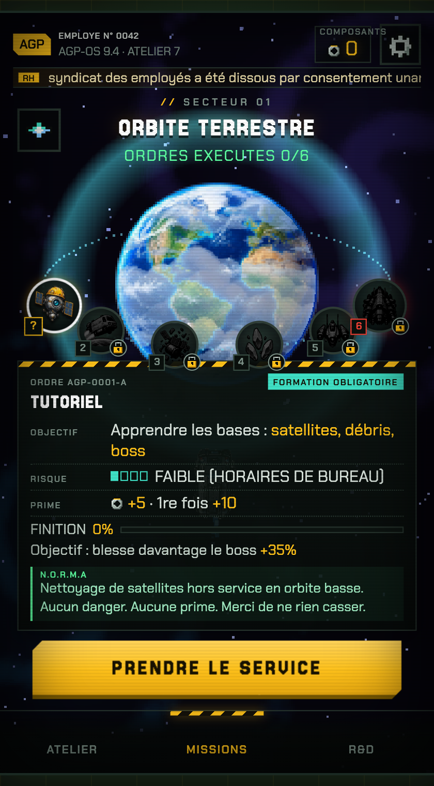
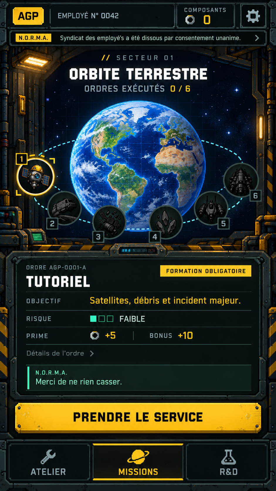
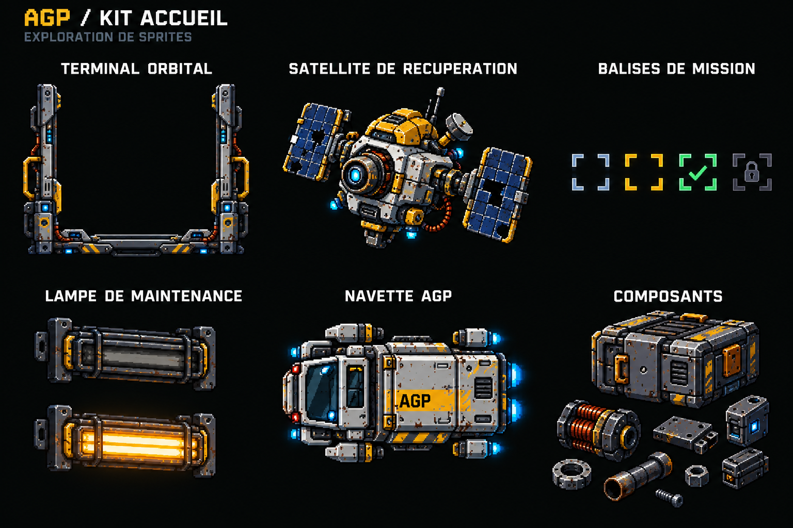

AGP / Un accueil au service de l’univers
La carte orbitale et les six ordres restent au centre. Le décor industriel rapproche l’accueil du garage ; une fiche plus courte hiérarchise l’objectif et la prime. Proposition visuelle, sans modification du jeu.
V2 · Parcours orbital vu depuis le hangar
Une progression linéaire de 01 à 06, une planète en volume, des étapes qui s’éloignent autour de son horizon et une console au premier plan. Le hublot appartient au hangar. Concept statique : rotation, parallaxe et sélection restent à implémenter.

Prompt V2 et principes de profondeur (.md)
Intégration réelle · profil de test à 100 %

Le pourcentage est calculé depuis les objectifs enregistrés. L’exemple utilise une sauvegarde de test isolée. Les missions non dotées d’objectifs détaillés affichent « Non définie pour cet ordre ».
Comparaison précédente
Version actuelle · capture locale

Bonne priorité au départ, mais fiche dense et effets lumineux éloignés du garage récent.Proposition · concept généré

Terminal orbital, matériaux du garage, informations regroupées. À alléger avant intégration : cadre métallique, rivets et lueurs cyan. Le verrouillage doit conserver un symbole explicite.Sprites à explorer

Priorité : cadre léger du terminal, satellite et balises. Réutiliser d’abord la camionnette et les icônes existantes. Cette planche est une exploration, pas un atlas découpé ou des PNG transparents prêts à intégrer.
Comparaison et spécifications des sprites (.md) · Prompts ImageGen (.md)